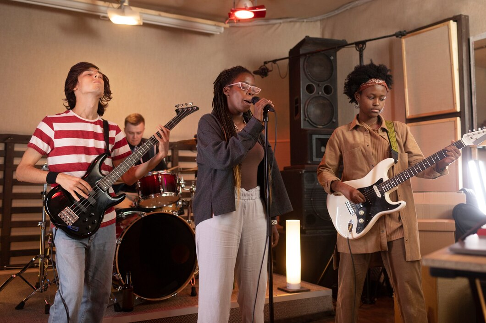

NUESTRA PROPUESTA
Somos una agrupación de artistas de diversos géneros y artes (músicos, artistas plásticos, bailarines y muchas más disciplinas). Buscamos crear una herramienta que permita tanto a artistas como espacios culturales coordinar ciclos artísticos específicos para su público habitual. Además dar proyección a través de un sistema de calificación. Esperamos que se puedan crear redes colaborativas alrededor de estos espacios ya que son el principal motor de las comunidades artísticas e interdisciplinarias, siendo también a nuestro parecer la forma más pura del arte.

Ig: @DondeToco // X: @Donde_Toco